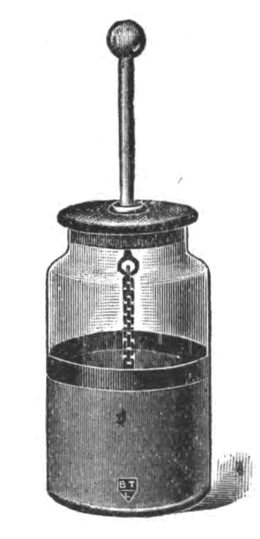
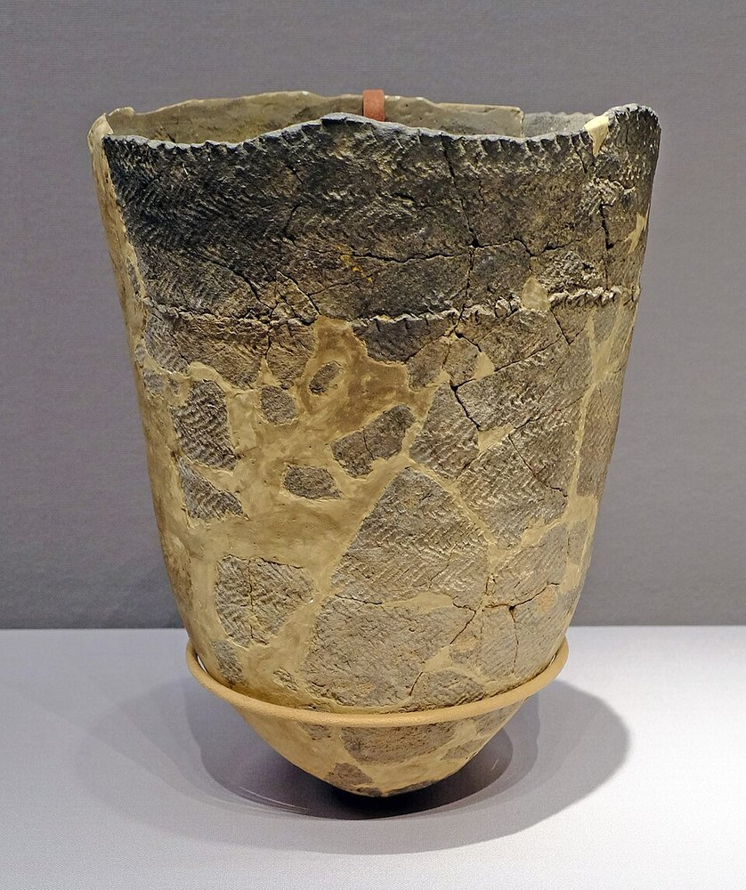
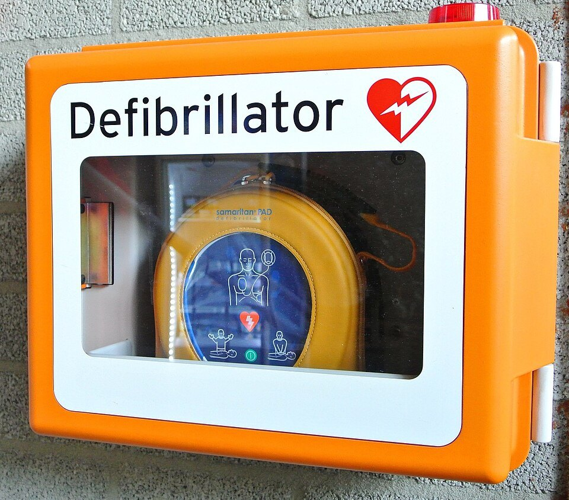
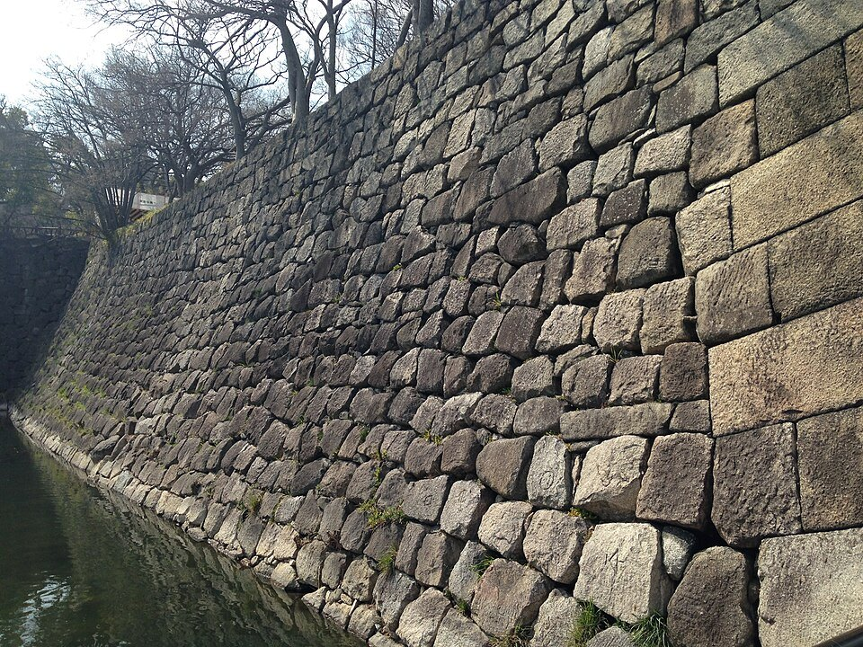
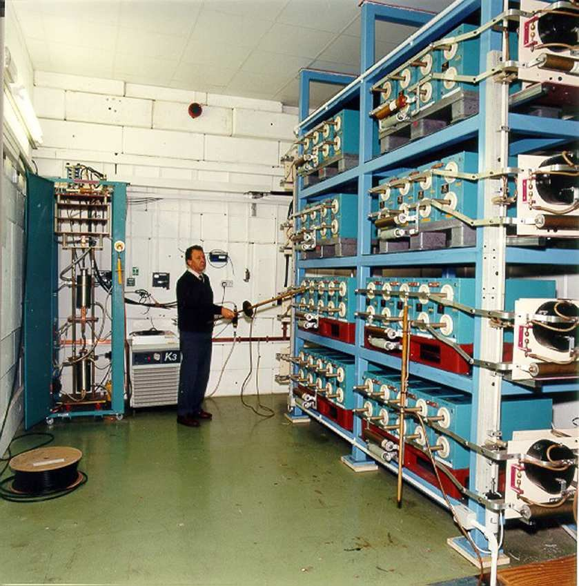
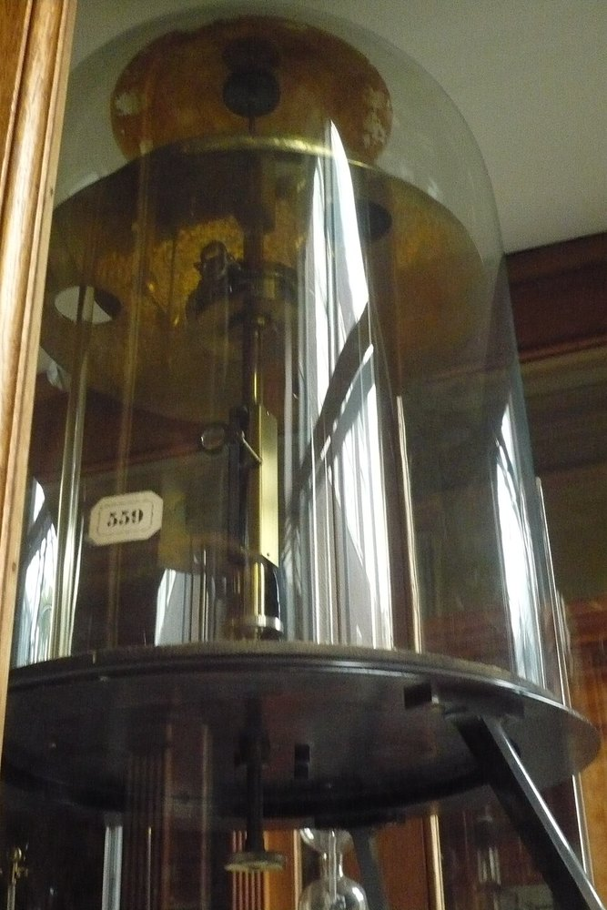

第4回
倉の中身は見えないが、しまわれた宝は、運び入れた手間のぶんだけそこに蓄えられている。
Roman SUZUKI／CC BY 3.0／Wikimedia Commons（正倉院、縮小）
2026年10月19日／配布資料「電場のエネルギー」対応。第3回では、電場の中で電荷を運ぶ仕事から「電位」を作った。この回では、その仕事を逆向きに眺める。電荷をためるには外から仕事が要る。その仕事はどこへ行ったのか。答えは「電場の中にエネルギーとして蓄えられている」で、その密度は $\tfrac12\varepsilon_0E^2$ と書ける。電荷をためる器（コンデンサ）の性質から出発して、この結論までを一本の筋で導く。
エネルギーとは「仕事をする能力」であり、物体に仕事をすると、した仕事の分だけ、その物体のもつエネルギーが増える。電場のエネルギーを考えるには、まず「電場の中で電荷を動かす仕事」を式にしておく必要がある。第3回の電位はこれを一般的にまとめたものだが、この回で使うのは 動く向きが電場の向きと同じか逆か の場合だけ（一様な電場、球対称な電場）なので、内積も線積分も要らない。向きを考えた 「力 × 動かした距離」 だけで足りる。
電場 $\boldsymbol E$ の中で電荷 $q$ は力 $q\boldsymbol E$ を受ける。この電荷を、ゆっくり（加速せずに）動かすには、外から $-q\boldsymbol E$、つまり電場の力と反対向きで同じ大きさの力を加え続ける必要がある。
最小の具体例：一様な電場 $E$ の中で、電場と逆向きに距離 $d$ だけ、電荷 $q$ をゆっくり運ぶ。外力の大きさは $qE$、動かす向きと外力の向きは同じなので、
$$W_{\text{外}}=qE\,d\qquad(1.1)$$外力がした仕事が $W_{\text{外}}$ で、これが電荷の位置エネルギーの増加になる。重力の場合と同じで、荷物を持ち上げる仕事 $mgh$ が位置エネルギーの増加になるのと対応している。
単位電荷あたりで考えると便利である。(1.1) を $q$ で割ると $Ed$ で、これが「電位差」である。
電荷 $q$ を、電位差 $V$ の2点の間で運ぶのに必要な外力の仕事は $qV$。
球対称な電場では、電場は電荷から遠ざかる向きを向いている。基準点を無限遠（資料：「基準点としてはしばしば無限遠点が選ばれる」）にとると、点電荷 $Q$ から距離 $r$ の点の電位 $\phi(r)$ は、無限遠から $r$ まで単位正電荷を運ぶ仕事である。ただし電場の力に逆らう向きに運ぶので、これは電場が単位電荷に（$r$ から無限遠まで動かすときに）する仕事 $\int_r^\infty E\,\mathrm dr'$ と同じ値になる。
結論：逆にならない。比べているのは「向きの違う2つの道筋の仕事」だからである（$Qgt 0$、$E$ は外向き）。
① 求めたいもの：$\infty\to r$ へ内向きに運ぶ外力の仕事。外力は進行方向（内向き）を向くので正：$W_{\text{外力}}=-\int_\infty^r E\,\mathrm dr'=\int_r^\infty E\,\mathrm dr'gt 0$（積分の上下端を入れ替えると符号が変わる）。
② 文中の仕事：$r\to\infty$ へ外向きに動くときに電場がする仕事。電場の力は外向きで進行方向と同じなので正：$\int_r^\infty E\,\mathrm dr'gt 0$。
①と②は同じ積分なので等しい。逆符号になるのは、同じ道筋（$\infty\to r$）で「外力の仕事」と「電場の仕事」を比べたとき（$W_{\text{場}}=-W_{\text{外力}}$）であり、それは文中の比較ではない。
確認：$Qgt 0$ なら $\phi(r)gt 0$（正電荷を近づけるには押し込む仕事が要る）。式 $\phi=\dfrac{Q}{4\pi\varepsilon_0 r}gt 0$ と一致する。
STEP 1 距離 $r'$ での電場の大きさ（外向き）は $E(r')=\dfrac{Q}{4\pi\varepsilon_0r'^2}$（第1回）。
STEP 2 $r'$ から $r'+\mathrm dr'$ まで動く間の仕事は $E(r')\,\mathrm dr'$（距離が短ければ、その間 $E$ を一定とみなせる）。これを $r$ から $\infty$ まで足し合わせる： $$\phi(r)=\int_r^\infty\frac{Q}{4\pi\varepsilon_0r'^2}\,\mathrm dr'=\frac{Q}{4\pi\varepsilon_0}\int_r^\infty\frac{\mathrm dr'}{r'^2}$$
STEP 3 【道具】$\dfrac{\mathrm d}{\mathrm dr}\Bigl(-\dfrac1r\Bigr)=\dfrac1{r^2}$ なので $\displaystyle\int\dfrac{\mathrm dr}{r^2}=-\dfrac1r$（微分して $r^{-2}$ になる関数を探している。$r^{-1}$ を微分すると $-r^{-2}$ だから、符号を合わせて $-r^{-1}$）。
STEP 4 上端 $\infty$ と下端 $r$ を代入する：$\displaystyle\Bigl[-\frac1{r'}\Bigr]_r^\infty=\Bigl(-\frac1\infty\Bigr)-\Bigl(-\frac1r\Bigr)=0+\frac1r=\frac1r$。したがって
$$\phi(r)=\frac{Q}{4\pi\varepsilon_0\,r}\qquad(1.3)$$確かめ：単位は $\dfrac{\mathrm C}{(\mathrm{C^2/(N\,m^2)})\cdot\mathrm m}=\dfrac{\mathrm{N\,m}}{\mathrm C}=\dfrac{\mathrm J}{\mathrm C}=\mathrm V$ で、電位の単位に一致する。$r\to\infty$ で $\phi\to0$ で、基準点と整合する。$Q\gt0$ なら $\phi\gt0$、つまり近づけるほど「高い」。正電荷を近づけるには外力の仕事が要るので正しい。
導体に電荷を与えると、その電荷がまわりに電場をつくり、導体の電位が上がる。「電荷をどれだけ与えたら、電位がどれだけ上がるか」は、導体の大きさや形によって違う。大きい導体のほうが、同じ電位に対してたくさんの電荷を蓄えられそうである。この蓄えやすさを一つの数にしたものが電気容量である。まず最も単純な導体球で式を作ってみる。
半径 $a$ の導体球の表面に電荷 $Q$ を与える。電荷は表面に一様に分布し、球の外側の電場は、第2回（球殻、例題6）より、中心に点電荷 $Q$ を置いたときと同じである。したがって電位も、(1.3) から、球の外側では $\phi(r)=\dfrac{Q}{4\pi\varepsilon_0r}$。球の表面（$r=a$）では
$$V=\frac{Q}{4\pi\varepsilon_0\,a}\qquad(2.1)\quad〔資料\ (4.1)〕$$球の内部は電場が 0 なので、内部で動かしても仕事がいらず、導体の内部は表面と同じ電位である。そのため「導体球の電位」と一つの値で言える。
(2.1) は「$V$ は $Q$ に比例する」ことを表している。電荷を2倍にすれば、場が2倍になる（重ね合わせ）ので、電位も2倍になる。そこで比例定数を決める。
(2.1) と (2.2) を見比べると、導体球の電気容量は
$$C=4\pi\varepsilon_0\,a\qquad(2.3)$$最小の具体例：半径 $a=1.0\ \mathrm{cm}$ の球では $C=4\pi\times8.85\times10^{-12}\times0.010=1.1\times10^{-12}\ \mathrm F=1.1\ \mathrm{pF}$。地球（$R=6.37\times10^6\ \mathrm m$）は $C=4\pi\varepsilon_0R=7.1\times10^{-4}\ \mathrm F$。1 F は、日常の物に比べてとても大きい単位である。
確かめ：(2.3) は「長さ × $\varepsilon_0$」の形で、$\varepsilon_0$ の単位が $\mathrm{C^2/(N\,m^2)}$ なので、$C$ の単位は $\mathrm{C^2/(N\,m)}=\mathrm{C^2/J}=\mathrm{C/V}$ となって $\mathrm F$ に一致する。
2個の導体 A、B にそれぞれ $+Q$、$-Q$ を与えたとき、この組をコンデンサという。この場合、電位は「A と B の電位差 $V$」で考え、$Q=CV$ の $C$ は、その組の電気容量である。いちばん基本的なのは、面積 $S$ の2枚の平らな板を、間隔 $d$ で向かい合わせた平板コンデンサである。
STEP 1（板の間の電場） 正の板の電荷密度は $\sigma=Q/S$。第2回5章で、平行平板（$+\sigma$ と $-\sigma$ の2枚）の間の電場は $E=\sigma/\varepsilon_0$、外側は 0 と求めた（資料：「平板の外側ではお互いの電気力線が打ち消しあう」）。資料のやり方で求め直すと、正電極板を囲む薄い円柱（ピルボックス）にガウスの法則を使い、$E\,\Delta S=\dfrac{Q}{\varepsilon_0}\dfrac{\Delta S}{S}$ で $$E=\frac{Q}{\varepsilon_0S}\qquad(2.4)$$ 電場は板の間で一様である。
STEP 2（電位差） 電場は一様なので (1.2) がそのまま使えて、$V=Ed=\dfrac{Qd}{\varepsilon_0S}$。
STEP 3（容量） $Q=CV$ と見比べて $C=Q/V$ を取ると、$Q$ が消えて
$$C=\frac{\varepsilon_0S}{d}\qquad(2.5)$$確かに $Q$ を含まず、$S$ と $d$ だけ、つまり形だけで決まる。
最小の具体例：$S=100\ \mathrm{cm^2}=1.0\times10^{-2}\ \mathrm{m^2}$、$d=1.0\ \mathrm{mm}$ のとき $C=\dfrac{8.85\times10^{-12}\times1.0\times10^{-2}}{1.0\times10^{-3}}=8.9\times10^{-11}\ \mathrm F=89\ \mathrm{pF}$。
では、$C=1\ \mathrm F$ の平板コンデンサは？ $d=1\ \mathrm{mm}$ とすると、$S=Cd/\varepsilon_0=\dfrac{1\times10^{-3}}{8.85\times10^{-12}}=1.1\times10^8\ \mathrm{m^2}$、約 $110\ \mathrm{km^2}$ になる。1 F が大きい単位だという感覚がつかめる。
確かめ：$d$ を小さくすると $C$ が大きくなる。向かい合う正負の電荷が近いほど、電場に逆らう仕事が小さくて済み、同じ電圧で多くの電荷が入る、と説明できる。$S$ が大きいほど電荷が広がれるので $C$ が大きい。向きも整っている。
半径 $a$ の導体球を、内半径 $b$ の球殻状の導体が囲み、内側の球に $+Q$、外側の殻に $-Q$ を与える（図2.2(a)）。同じように、半径 $a$ の長い導体円柱を、内半径 $b$ の円筒が囲む（同軸ケーブル、図2.2(b)）。どちらも、電場は2つの導体のあいだだけにある。
STEP 1（電場） 同心球：半径 $r$（$a\lt r\lt b$）の同心球面にガウスの法則を使うと、中にあるのは内球の $+Q$ だけなので、$E(r)=\dfrac{Q}{4\pi\varepsilon_0r^2}$。外側の殻の電荷は、内側の電場に寄与しない（第2回、球殻）。
同軸円筒：単位長さあたりの電荷を $\lambda=Q/L$（$L$ は長さ）とする。半径 $r$ の同軸円筒面にガウスの法則を使うと（第2回、無限直線）$E(r)=\dfrac{\lambda}{2\pi\varepsilon_0r}$。端の影響は無視する。
STEP 2（電位差） 内側の導体の電位は、外側より $V=\displaystyle\int_a^bE\,\mathrm dr$ だけ高い（電場がする仕事。資料 (3.2)）。
同心球：$V=\dfrac{Q}{4\pi\varepsilon_0}\displaystyle\int_a^b\dfrac{\mathrm dr}{r^2}=\dfrac{Q}{4\pi\varepsilon_0}\Bigl(\dfrac1a-\dfrac1b\Bigr)=\dfrac{Q}{4\pi\varepsilon_0}\dfrac{b-a}{ab}$。
同軸円筒：$V=\dfrac{\lambda}{2\pi\varepsilon_0}\displaystyle\int_a^b\dfrac{\mathrm dr}{r}=\dfrac{\lambda}{2\pi\varepsilon_0}\ln\dfrac ba$。【道具】$\ln r$ を微分すると $1/r$ になる。
STEP 3（容量） $C=Q/V$ より
$$C_{\text{同心球}}=\frac{4\pi\varepsilon_0\,ab}{b-a},\qquad \frac{C_{\text{同軸}}}{L}=\frac{2\pi\varepsilon_0}{\ln(b/a)}\qquad(2.6)$$確かめ：同心球で外側を無限に遠ざける（$b\to\infty$）と $C\to4\pi\varepsilon_0\,a$ で、(2.3) の孤立した導体球に戻る。$b\to a$（隙間が薄い）と $C\to\infty$ で、平板コンデンサ（$d\to0$）の傾向と一致する。実際、$b=a+d$ で $d\ll a$ とすると $C\approx4\pi\varepsilon_0a^2/d=\varepsilon_0S/d$（$S=4\pi a^2$）で、(2.5) に一致する。
最小の具体例：$a=5.00\ \mathrm{cm}$、$b=8.00\ \mathrm{cm}$ の同心球：$C=\dfrac{4\pi\times8.85\times10^{-12}\times0.0500\times0.0800}{0.0300}=1.48\times10^{-11}\ \mathrm F=14.8\ \mathrm{pF}$。
コンデンサを2個つなぐとき、つなぎ方は2通りある。どちらでも、「電圧が共通なのか、電荷が共通なのか」を見分けると、全体の容量が求まる。
並列 どちらにも同じ電圧 $V$ がかかる。それぞれに $Q_1=C_1V$、$Q_2=C_2V$ が蓄えられ、全体では $Q=Q_1+Q_2=(C_1+C_2)V$。$Q=CV$ と比べて
$$C=C_1+C_2\qquad(2.7)$$直列 つなぎ目の導体は、全体として電気的に中性（$-Q$ と $+Q$ が打ち消す）なので、両方のコンデンサに同じ $Q$ が蓄えられる。電圧は足し算になる：$V=V_1+V_2=\dfrac{Q}{C_1}+\dfrac{Q}{C_2}=Q\Bigl(\dfrac1{C_1}+\dfrac1{C_2}\Bigr)$。$V=Q/C$ と比べて
$$\frac1C=\frac1{C_1}+\frac1{C_2}\qquad(2.8)$$確かめ：並列は「板の面積が増える」のと同じなので、$C$ が増えて当然（平板 (2.5) の $S$ が足し算になる）。直列は「板の間隔が足し算になる」のと同じなので、$C$ が減る（(2.5) の $d$ の足し算）。
PHOTO 1｜現実

ライデン瓶は、ガラスをはさむ内と外の二つの導体に電荷を蓄える、もっとも古いコンデンサである。
Robert Alexander Houstoun／Public domain／Wikimedia Commons
MITATE 1｜見立て

深鉢が一度に煮ることのできる量は、土の質でも火の強さでもなく、形の大きさで決まっている。
Davide Mauro／CC BY-SA 4.0／Wikimedia Commons（縮小）
電荷を蓄えるには、すでに蓄えられた電荷がつくる電場に逆らって、さらに電荷を運ぶ必要がある（資料）。最初の1個を運ぶときはまわりに電荷がないので力はいらないが、電荷がたまるほど電位が高くなり、次の1個を運ぶのに必要な仕事は大きくなる。電荷を $0$ から $Q$ まで蓄えるのに必要な仕事の合計 $W$ を求めるのが、この章の目的である。
いま、電荷が $q$ たまっている（$0\lt q\lt Q$）。導体の電位は (2.2) より $V(q)=q/C$。ここへ、微小な電荷 $\mathrm dq$ を無限遠から運ぶ。$\mathrm dq$ は小さいので、運ぶ間、電位は $q/C$ のままと近似でき、1.2 節（電位差 $V$ の間で電荷 $\mathrm dq$ を運ぶ仕事は $\mathrm dq\cdot V$）から
$$\mathrm dW=V(q)\,\mathrm dq=\frac{q}{C}\,\mathrm dq\qquad(3.1)$$球で確かめると、〔資料 (4.2)〕球面上に $q$ があるとき、球の外の電場は $E(r)=\dfrac{q}{4\pi\varepsilon_0r^2}$。外力が $\mathrm dq$ を $\infty$ から球面 $r=a$ まで運ぶ仕事は $\mathrm dW=\mathrm dq\displaystyle\int_a^\infty\dfrac{q}{4\pi\varepsilon_0r^2}\,\mathrm dr=\mathrm dq\,\dfrac{q}{4\pi\varepsilon_0a}=\dfrac{q\,\mathrm dq}{C}$（$C=4\pi\varepsilon_0a$）で、(3.1) と一致する〔資料の式と同じ〕。
最小の具体例：半径 $5.0\ \mathrm{cm}$ の球に $Q=2.0\ \mathrm{nC}$ を与える。$C=4\pi\varepsilon_0a=5.56\ \mathrm{pF}$。$Q$ を 4 回に分け、$\Delta q=0.50\ \mathrm{nC}$ ずつ運ぶ。$i$ 回目（$i=0,1,2,3$）の直前には $q_i=i\,\Delta q$ だけたまっているので、その回の仕事は（近似として直前の電位で）$\dfrac{q_i}{C}\Delta q$。合計は $$\frac{(\Delta q)^2}{C}(0+1+2+3)=\frac{6\,(0.50\times10^{-9})^2}{5.56\times10^{-12}}=2.7\times10^{-7}\ \mathrm J$$
これは回数を細かくするほど正確になり、10回で $3.24\times10^{-7}$、100回で $3.56\times10^{-7}$、1000回で $3.59\times10^{-7}\ \mathrm J$ に近づいていく（Python で数値計算した値）。極限は、次の積分である。
STEP 1 (3.1) の両辺を足し合わせる（$q$ を $0$ から $Q$ まで積分）：$W=\displaystyle\int_0^Q\dfrac{q}{C}\,\mathrm dq$。$C$ は $q$ によらない定数なので外に出せる。
STEP 2 $\displaystyle\int_0^Qq\,\mathrm dq=\Bigl[\dfrac{q^2}{2}\Bigr]_0^Q=\dfrac{Q^2}{2}$（$q^2$ を微分すると $2q$ だから $\tfrac12q^2$）。図3.1 の三角形の面積 $\tfrac12\times Q\times\dfrac QC$ と一致する。
STEP 3 したがって
$$W=\frac{Q^2}{2C}=\frac12QV=\frac12CV^2\qquad(3.2)\quad〔資料\ (4.3)〕$$2つ目、3つ目の形は、$Q=CV$（2.2）を使った書き換えである。
数値で確かめる：$Q=2.0\ \mathrm{nC}$、$C=5.56\ \mathrm{pF}$ では $V=Q/C=3.6\times10^2\ \mathrm V$（359 V）、$W=\dfrac{Q^2}{2C}=\dfrac{(2.0\times10^{-9})^2}{2\times5.56\times10^{-12}}=3.6\times10^{-7}\ \mathrm J$。$\tfrac12QV=\tfrac12\times2.0\times10^{-9}\times359=3.6\times10^{-7}\ \mathrm J$ で一致。4回に分けた和（$2.7\times10^{-7}$）は、極限の 3/4 になっている。
確かめ：単位は $\dfrac{\mathrm C^2}{\mathrm F}=\mathrm C\cdot\dfrac{\mathrm C}{\mathrm F}=\mathrm C\cdot\mathrm V=\mathrm J$ で、エネルギーの単位。$Q\to0$ で $W\to0$。同じ $Q$ でも $C$ が大きい（電圧が低い）ほど必要な仕事は小さい。
PHOTO 2｜現実

AED の中ではコンデンサにエネルギーを蓄えておき、それを一度に電気ショックとして放出する。
Tanja-Denise Schantz／CC0／Wikimedia Commons（縮小）
MITATE 2｜見立て

石垣は石を一つずつ運び上げて積んだものであり、積んだ石の数だけ、運ぶ仕事が積もっている。
そらみみ／CC BY-SA 3.0／Wikimedia Commons（大阪城の石垣、縮小）
3章で求めた $W=\dfrac{Q^2}{2C}$ は、外から加えた仕事である。この仕事はなくなったわけではなく、コンデンサを放電させれば（電荷を元に戻せば）、電流に取り出すことができる。つまりエネルギーとして蓄えられている。では、そのエネルギーは空間のどこにあるのだろうか。見方が2つある。
資料は後者を採る：「電場にはエネルギーが分布している。そのエネルギー密度は $\varepsilon_0E^2/2$ で与えられる」。この節では、これを仮説として置き、球と平板の2つの場合に、3章の結果と一致することを確かめる。
確かめ（単位）：$\varepsilon_0E^2$ の単位は $\dfrac{\mathrm{C^2}}{\mathrm{N\,m^2}}\cdot\dfrac{\mathrm{N^2}}{\mathrm{C^2}}=\dfrac{\mathrm N}{\mathrm m^2}=\dfrac{\mathrm{N\,m}}{\mathrm m^3}=\dfrac{\mathrm J}{\mathrm m^3}$。体積あたりのエネルギーの単位になっている。なお $\mathrm{N/m^2}$ は圧力の単位 Pa でもあり、5章でこれが「電場が板を引く圧力」の意味をもつことが分かる。
電場が球対称なとき、「全空間にわたる積分」は、半径 $r$ と $r+\mathrm dr$ の2つの球面にはさまれた薄い球殻に分けて足すとよい。球殻の中では電場の強さが（ほぼ）一定だからである。
半径 $a$ の導体球に電荷 $Q$ を与える。球の内部は $E=0$、外部は $E(r)=\dfrac{Q}{4\pi\varepsilon_0r^2}$（資料のとおり、ガウスの定理から）。(4.1) の $w$ を、外部の全空間で積分する。
STEP 1 半径 $r$、厚さ $\mathrm dr$ の球殻のエネルギー：$\mathrm dW_{\mathrm e}=w\,\mathrm dV=\dfrac{\varepsilon_0}{2}\Bigl(\dfrac{Q}{4\pi\varepsilon_0r^2}\Bigr)^2\cdot4\pi r^2\,\mathrm dr$。
STEP 2 整理する。$\Bigl(\dfrac{Q}{4\pi\varepsilon_0r^2}\Bigr)^2=\dfrac{Q^2}{16\pi^2\varepsilon_0^2r^4}$ なので、$\dfrac{\varepsilon_0}{2}\cdot\dfrac{Q^2}{16\pi^2\varepsilon_0^2r^4}\cdot4\pi r^2=\dfrac{Q^2}{8\pi\varepsilon_0}\cdot\dfrac1{r^2}$。（係数：$\dfrac12\cdot\dfrac{4\pi}{16\pi^2}=\dfrac1{8\pi}$。$\varepsilon_0$ は $\varepsilon_0/\varepsilon_0^2=1/\varepsilon_0$。$r$ は $r^2/r^4=r^{-2}$）
STEP 3 $a$ から $\infty$ まで足し合わせる：$W_{\mathrm e}=\dfrac{Q^2}{8\pi\varepsilon_0}\displaystyle\int_a^\infty\dfrac{\mathrm dr}{r^2}=\dfrac{Q^2}{8\pi\varepsilon_0}\cdot\dfrac1a$（1.3節の道具と同じ）。
STEP 4 3章の結果と比べる。$C=4\pi\varepsilon_0a$ を使うと $\dfrac{Q^2}{2C}=\dfrac{Q^2}{8\pi\varepsilon_0a}$。したがって
$$W_{\mathrm e}=\frac{Q^2}{8\pi\varepsilon_0a}=\frac{Q^2}{2C}\qquad(4.2)$$3章では「電荷を運ぶ仕事」（電荷の見方）、ここでは「電場の分布を積分」（場の見方）で、全く別の道筋で計算したのに同じ値になった。これが、$\tfrac12\varepsilon_0E^2$ という係数が正しいことの最初の証拠である（もし係数が $\tfrac14$ や 1 だったら、一致しない）。
図4.2 を見ると、エネルギーは電荷のごく近くに集中している。割合が $1-a/r$ になるのは、$a$ から $r$ までの積分が $\dfrac1a-\dfrac1r$ になるからである。
次は、球とは全く違う形の平板コンデンサで確かめる。板の間の電場は (2.4) より $E=\dfrac{Q}{\varepsilon_0S}$ で、一様。エネルギーは、電場が存在する体積 $Sd$（板の間）に蓄えられる。
STEP 1 一様なので、積分は「密度 × 体積」と同じ：$W_{\mathrm e}=\dfrac12\varepsilon_0E^2\times Sd=\dfrac12\varepsilon_0\Bigl(\dfrac{Q}{\varepsilon_0S}\Bigr)^2Sd$。
STEP 2 整理：$\dfrac12\cdot\dfrac{Q^2}{\varepsilon_0S^2}\cdot Sd=\dfrac{Q^2d}{2\varepsilon_0S}$。
STEP 3 $C=\varepsilon_0S/d$（2.5）から $\dfrac{d}{\varepsilon_0S}=\dfrac1C$ なので $W_{\mathrm e}=\dfrac{Q^2}{2C}$。3章 (3.2) と一致する。〔資料の最後の式〕
最小の具体例：2.3節の $S=100\ \mathrm{cm^2}$、$d=1.0\ \mathrm{mm}$、$V=100\ \mathrm V$ では、$E=V/d=1.0\times10^5\ \mathrm{V/m}$、$w=\tfrac12\varepsilon_0E^2=\tfrac12\times8.85\times10^{-12}\times(10^5)^2=4.4\times10^{-2}\ \mathrm{J/m^3}$。体積 $Sd=1.0\times10^{-5}\ \mathrm{m^3}$ なので $W_{\mathrm e}=4.4\times10^{-7}\ \mathrm J$。一方、$C=88.5\ \mathrm{pF}$ から $\tfrac12CV^2=\tfrac12\times88.5\times10^{-12}\times10^4=4.4\times10^{-7}\ \mathrm J$（Python で検算済み）。一致している。
球と平板は形がまったく違うが、どちらも (4.1) で3章の結果と一致した。資料はここから「上記は電荷を蓄える導体が球ではない場合にも成り立つ。一般に、真空中で単位体積あたりに蓄えられる電場のエネルギーは $w_{\mathrm e}=\tfrac12\varepsilon_0\boldsymbol E^2$」と一般化する。
PHOTO 3｜現実

青い棚にぎっしり並んだコンデンサの、板と板のあいだの空間に、電場のエネルギーが蓄えられている。
Colin N. Danson ほか／CC BY 4.0／Wikimedia Commons（VULCAN レーザーのコンデンサ群、縮小）
MITATE 3｜見立て
引き絞られた弓は、見た目には静止していても、引いた仕事のぶんの力を、しなりのなかに蓄えている。
外務省／Public domain／Wikimedia Commons（那須与一、縮小）
平板コンデンサの2枚の板は、異符号の電荷なので引き合う。この力 $F$ の大きさを、エネルギーの変化から求める。板を電源から切り離して電荷 $Q$ を一定に保ち、一方の板を外力でゆっくり $\Delta d$ だけ引き離すとする。引き離すときの外力の仕事は、力 $F$ に逆らう仕事 $F\,\Delta d$ で、これがコンデンサのエネルギーの増加になる。
STEP 1 間隔 $d$ のときのエネルギーは、(3.2) と (2.5) から $W(d)=\dfrac{Q^2}{2C}=\dfrac{Q^2d}{2\varepsilon_0S}$。$Q$ が一定なので、$d$ に比例して増える（図5.1 の赤線）。
STEP 2 $d\to d+\Delta d$ でのエネルギーの増加：$\Delta W=\dfrac{Q^2}{2\varepsilon_0S}\Delta d$。
STEP 3 これが外力の仕事 $F\Delta d$ に等しいので
$$F=\frac{Q^2}{2\varepsilon_0S}=\frac12QE=\frac12\varepsilon_0E^2\,S\qquad(5.1)$$2つ目は $E=Q/\varepsilon_0S$（2.4）、3つ目は $Q=\varepsilon_0ES$ を使った書き換えである。
3つ目の形に注目すると、単位面積あたりの引力 $F/S=\tfrac12\varepsilon_0E^2$ が、エネルギー密度 $w$ と同じ式になっている。4.1 節で触れた単位の $\mathrm{N/m^2}=\mathrm{J/m^3}$ の一致は、偶然ではなく、「電場は板を $w$ の圧力で引く」という意味をもつ。
最小の具体例：2.3節の板（$S=100\ \mathrm{cm^2}$）に $Q=8.85\ \mathrm{nC}$（$V=100\ \mathrm V$、$d=1\ \mathrm{mm}$）が蓄えられているとき、$F=\dfrac{Q^2}{2\varepsilon_0S}=4.4\times10^{-4}\ \mathrm N$（$=\tfrac12QE=\tfrac12\times8.85\times10^{-9}\times10^5$ と一致）。質量にすると約 $45\ \mathrm{mg}$（$4.4\times10^{-4}\ \mathrm N\div9.8\ \mathrm{m/s^2}$）の物体にはたらく重力と同じ程度で、板の間隔を縮めたり電圧を上げたりすると大きくなる。
これまでは導体に電荷を蓄える話だったが、同じ「運ぶ仕事」で、点電荷を並べるのに必要な仕事も求められる。電荷がすべて無限遠にバラバラにある状態を、エネルギーの基準（0）とする。
STEP 1（2個） 1個目 $q_1$ を原点に置くのに、まわりに電荷はないので仕事は 0。
STEP 2 2個目 $q_2$ を、無限遠から $q_1$ から距離 $d$ の点まで運ぶ。$q_1$ がつくる電位は (1.3) より $\phi_1(d)=\dfrac{q_1}{4\pi\varepsilon_0d}$。電荷 $q_2$ を運ぶ外力の仕事は 1.2節より $q_2\phi_1(d)$：
$$U=\frac{q_1q_2}{4\pi\varepsilon_0\,d}\qquad(5.2)$$STEP 3（3個以上） 3個目 $q_3$ を運ぶときは、$q_1$ と $q_2$ の2つがつくる電位の和（重ね合わせ）に逆らう：$q_3\bigl(\phi_1+\phi_2\bigr)$。したがって、全体のエネルギーは、すべての電荷のペアについての (5.2) の和である：
$$U=\sum_{\text{ペア }i\lt j}\frac{q_iq_j}{4\pi\varepsilon_0\,r_{ij}}\qquad(5.3)$$確かめ：同符号なら $U\gt0$（近づけるのに仕事が要る）、異符号なら $U\lt0$（近づけると外力は仕事をされる側になる。引き合う電荷は「束縛」されている）。どの電荷から運んでも、順序によらず同じ (5.3) になる。
最小の具体例：$q_1=q_2=1.0\ \mathrm{nC}$、距離 $10\ \mathrm{cm}$：$U=\dfrac{8.99\times10^9\times(1.0\times10^{-9})^2}{0.10}=9.0\times10^{-8}\ \mathrm J$（$k=1/4\pi\varepsilon_0=8.99\times10^9\ \mathrm{N\,m^2/C^2}$）。
例：図5.2 の4個の電荷を集めるエネルギーは、(5.3) より $U=\dfrac{q^2}{4\pi\varepsilon_0}\Bigl(\dfrac4a+\dfrac2{\sqrt2a}\Bigr)=\dfrac{q^2}{4\pi\varepsilon_0a}\bigl(4+\sqrt2\bigr)$。$q=1.0\ \mathrm{nC}$、$a=10\ \mathrm{cm}$ では $U=9.0\times10^{-8}\times5.41=4.9\times10^{-7}\ \mathrm J$（全ペアの数値和でも検算済み）。
| 見方 | 式 | 何を足し合わせたか |
|---|---|---|
| コンデンサの仕事 | $W=\dfrac{Q^2}{2C}=\dfrac12QV$ | 電荷を $\mathrm dq$ ずつ運ぶ仕事（3章） |
| 電場のエネルギー | $W_{\mathrm e}=\displaystyle\int\dfrac{\varepsilon_0}{2}E^2\mathrm dV$ | 空間の各点の密度 $\tfrac12\varepsilon_0E^2$（4章） |
| 点電荷の組 | $U=\displaystyle\sum_{i\lt j}\dfrac{q_iq_j}{4\pi\varepsilon_0r_{ij}}$ | 電荷をひとつずつ運ぶ仕事（5.2節） |
どれも「電荷をバラバラの状態から集めるのに必要な仕事」で、静電場の範囲ではすべて同じ値になる。（点電荷の組では、場のエネルギーが各電荷の自己エネルギーを含んで無限大になるので、(5.3) は自己エネルギーを除いた分である。）
PHOTO 4｜現実

トムソン（ケルビン）の型にならった絶対電位計は、向かい合う円板の引き合う力から電位差を測る。
instrumentmakers／CC BY-SA 3.0 nl／Wikimedia Commons（ブレゲ製、1883年、縮小）
半径 $2.0\ \mathrm{cm}$ の導体球に $Q=3.0\ \mathrm{nC}$ を与える。(1) 電気容量 $C$、(2) 球の電位 $V$、(3) 蓄えられたエネルギー $W$、(4) 球の表面でのエネルギー密度 $w$ を求めよ。
出典：本教材の自作。
解答
① (1) (2.3) より $C=4\pi\varepsilon_0a=4\pi\times8.85\times10^{-12}\times0.020=2.2\times10^{-12}\ \mathrm F=2.2\ \mathrm{pF}$。
② (2) $V=Q/C=\dfrac{3.0\times10^{-9}}{2.2\times10^{-12}}=1.3\times10^3\ \mathrm V$（1348 V）。
③ (3) (3.2) より $W=\tfrac12QV=\tfrac12\times3.0\times10^{-9}\times1348=2.0\times10^{-6}\ \mathrm J$。
④ (4) 表面の電場 $E=\dfrac{Q}{4\pi\varepsilon_0a^2}=\dfrac{V}{a}=\dfrac{1348}{0.020}=6.7\times10^4\ \mathrm{V/m}$（点電荷の電場の式と、$V=Q/4\pi\varepsilon_0a$ から）。$w=\tfrac12\varepsilon_0E^2=\tfrac12\times8.85\times10^{-12}\times(6.74\times10^4)^2=2.0\times10^{-2}\ \mathrm{J/m^3}$。
⑤ 【確かめ】球の外のエネルギー密度は $w(r)=w(a)\bigl(\tfrac ar\bigr)^4$（$E\propto r^{-2}$ の2乗）。厚さ $\mathrm dr$ の球殻で足し合わせると $\displaystyle\int_a^\infty w(a)\Bigl(\frac ar\Bigr)^44\pi r^2\,\mathrm dr=4\pi a^4w(a)\int_a^\infty\frac{\mathrm dr}{r^2}=4\pi a^3w(a)$。数値は $4\pi\times(0.020)^3\times2.01\times10^{-2}=2.0\times10^{-6}\ \mathrm J$ で、(3) と一致する。
半径 $R$ の球の体積全体に、全電荷 $Q$ が一様に分布している。この球がもつ電場のエネルギーを、(4.1) を使って求めよ。また、同じ $Q$ が球の表面だけに分布している場合（導体球）と比べよ。
出典：本教材の自作（標準的な問題の型。結果は Griffiths §2.4 の例題と同じ形。照合は未実施）。
解答
① 第2回の結果から、内側 $r\lt R$：$E=\dfrac{Qr}{4\pi\varepsilon_0R^3}$、外側 $r\gt R$：$E=\dfrac{Q}{4\pi\varepsilon_0r^2}$。球殻の体積 $4\pi r^2\mathrm dr$ で積分する。
② 内側：$W_{\text{内}}=\displaystyle\int_0^R\dfrac{\varepsilon_0}{2}\Bigl(\dfrac{Qr}{4\pi\varepsilon_0R^3}\Bigr)^24\pi r^2\mathrm dr=\dfrac{Q^2}{8\pi\varepsilon_0R^6}\displaystyle\int_0^Rr^4\mathrm dr=\dfrac{Q^2}{8\pi\varepsilon_0R^6}\cdot\dfrac{R^5}{5}=\dfrac{Q^2}{40\pi\varepsilon_0R}$。（係数は 4.3節と同様に $\tfrac12\cdot\tfrac{4\pi}{16\pi^2}=\tfrac1{8\pi}$。$r^2\cdot r^2=r^4$）
③ 外側：4.3節と同じ計算で $W_{\text{外}}=\dfrac{Q^2}{8\pi\varepsilon_0R}=\dfrac{5Q^2}{40\pi\varepsilon_0R}$。
④ 合計：$W_{\mathrm e}=\dfrac{(1+5)Q^2}{40\pi\varepsilon_0R}=\dfrac{3Q^2}{20\pi\varepsilon_0R}$。
⑤ 【比較】表面だけに分布する導体球は $\dfrac{Q^2}{8\pi\varepsilon_0R}=\dfrac{5Q^2}{40\pi\varepsilon_0R}$。一様な球はその $\dfrac65$ 倍で、内側にも電場があるぶんだけ大きい。差は内側の $\dfrac{Q^2}{40\pi\varepsilon_0R}$ にほかならない。
$40\ \mathrm{pF}$ のコンデンサを $500\ \mathrm V$ に充電し、その端子を、充電されていない $10\ \mathrm{pF}$ のコンデンサの端子につなぐ。(a) $40\ \mathrm{pF}$ のコンデンサの最初の電荷、(b) つないだ後の各コンデンサの電荷、(c) つないだ後の各コンデンサの電圧を求めよ。また (d) つなぐ前後のエネルギーを比べよ。
出典：OpenStax, University Physics Volume 2, Ch.8 Problems #38（CC BY-NC-SA 4.0, openstax.org）。和訳は本教材。(d) は本教材で加えた設問。
照合：#38 は偶数番で公式解答がないため自作の解答（未照合）。
解答
① (a) $Q_0=C_1V_0=40\times10^{-12}\times500=2.0\times10^{-8}\ \mathrm C=20\ \mathrm{nC}$。
② (b)(c) つないだ後は並列（電圧が共通）で、全電荷は保存される（つないでも電荷は増減しない）。全容量は (2.7) より $C=40+10=50\ \mathrm{pF}$。共通の電圧は $V=\dfrac{Q_0}{C}=\dfrac{20\ \mathrm{nC}}{50\ \mathrm{pF}}=400\ \mathrm V$。電荷は $Q_1=C_1V=40\ \mathrm{pF}\times400=16\ \mathrm{nC}$、$Q_2=10\ \mathrm{pF}\times400=4.0\ \mathrm{nC}$（合計 $20\ \mathrm{nC}$）。
③ (d) 前：$\tfrac12C_1V_0^2=\tfrac12\times40\times10^{-12}\times500^2=5.0\times10^{-6}\ \mathrm J$。後：$\tfrac12(C_1+C_2)V^2=\tfrac12\times50\times10^{-12}\times400^2=4.0\times10^{-6}\ \mathrm J$。
④ 【解釈】$1.0\times10^{-6}\ \mathrm J$ が減った。電荷は保存されるのに、エネルギーは保存されない。この差は、2つのコンデンサの電圧が違う状態を急に接続したとき、導線を電荷が流れる間の熱や火花の光などになる、と考えられる（本教材では導かない）。エネルギーの収支が合うのは、こうした散逸を含めたときである。
2枚の正方形の板（一辺 $25\ \mathrm{cm}$）が $1.0\ \mathrm{mm}$ 離れ、$50.0\ \mathrm V$ の電池につながれている。電池につないだまま、板の間隔を $2.00\ \mathrm{mm}$ まで引き離す。(1) 引き離す前後に蓄えられているエネルギーを求めよ。(2) なぜ、引き離すという仕事をしているのに、エネルギーが減るのか。
出典：OpenStax, University Physics Volume 2, Ch.8 Problems #48（CC BY-NC-SA 4.0, openstax.org）。和訳は本教材。
照合：#48 は偶数番で公式解答がないため自作の解答（未照合）。エネルギーの収支（⑤⑥）は本教材で加えた確認。
解答
① $S=(0.25)^2=0.0625\ \mathrm{m^2}$。前：$C_1=\dfrac{\varepsilon_0S}{d_1}=\dfrac{8.85\times10^{-12}\times0.0625}{1.0\times10^{-3}}=5.5\times10^{-10}\ \mathrm F$（553 pF）、$W_1=\tfrac12C_1V^2=\tfrac12\times5.53\times10^{-10}\times50^2=6.9\times10^{-7}\ \mathrm J$。
② 後：$d_2=2d_1$ なので $C_2=C_1/2=2.77\times10^{-10}\ \mathrm F$、電圧は電池が $50\ \mathrm V$ に保つので $W_2=\tfrac12C_2V^2=3.5\times10^{-7}\ \mathrm J$（前の半分）。
③ (2) 電池につながれているので電圧 $V$ が一定。間隔が2倍になると容量が半分になり、蓄えられる電荷 $Q=CV$ が $Q_1=C_1V=2.77\times10^{-8}\ \mathrm C$ から $Q_2=1.38\times10^{-8}\ \mathrm C$ に減る。余った電荷 $\Delta Q=1.38\times10^{-8}\ \mathrm C$ は、電池へ戻っていく。
④ 【力と外力の仕事】電圧一定のとき、間隔 $d$ での引力は (5.1) の3つ目の式から $F=\tfrac12\varepsilon_0E^2S$、$E=V/d$ なので $F=\dfrac{\varepsilon_0SV^2}{2d^2}$。$d_1$ から $d_2$ まで引き離す外力の仕事：$W_{\text{外}}=\displaystyle\int_{d_1}^{d_2}\dfrac{\varepsilon_0SV^2}{2d^2}\mathrm dd=\dfrac{\varepsilon_0SV^2}{2}\Bigl(\dfrac1{d_1}-\dfrac1{d_2}\Bigr)=\dfrac12W_1=3.5\times10^{-7}\ \mathrm J$。
⑤ 【収支】コンデンサのエネルギー変化は $W_2-W_1=-3.5\times10^{-7}\ \mathrm J$（減少）。外力が $+3.5\times10^{-7}\ \mathrm J$ を加え、合わせて $6.9\times10^{-7}\ \mathrm J$ が電池に戻る。電池に戻った電荷 $\Delta Q$ がする仕事 $\Delta Q\cdot V=1.38\times10^{-8}\times50=6.9\times10^{-7}\ \mathrm J$ と一致する。つまり、エネルギーは「コンデンサの減少分と外力の仕事」の両方が、電池に戻ったと言える。
⑥ 【図5.1との対応】電圧一定では $W\propto1/d$（青線）。同じ操作を、電荷一定で行えば、(5.1) のとおり $W\propto d$（赤線）で、エネルギーは増える。
出典：本教材の自作。
① (1) $C=\dfrac{\varepsilon_0S}{d}=\dfrac{8.85\times10^{-12}\times2.0\times10^{-2}}{0.50\times10^{-3}}=3.5\times10^{-10}\ \mathrm F=354\ \mathrm{pF}$。
② (2) $Q=CV=3.54\times10^{-10}\times12=4.3\times10^{-9}\ \mathrm C=4.3\ \mathrm{nC}$。
③ (3) $W=\tfrac12CV^2=\tfrac12\times3.54\times10^{-10}\times12^2=2.6\times10^{-8}\ \mathrm J$。
④ (4) $E=V/d=\dfrac{12}{0.50\times10^{-3}}=2.4\times10^4\ \mathrm{V/m}$。$w=\tfrac12\varepsilon_0E^2=\tfrac12\times8.85\times10^{-12}\times(2.4\times10^4)^2=2.6\times10^{-3}\ \mathrm{J/m^3}$。【確かめ】$w\times Sd=2.55\times10^{-3}\times1.0\times10^{-5}=2.6\times10^{-8}\ \mathrm J$ で (3) と一致。
出典：本教材の自作。
① (a) $C=2.0+3.0=5.0\ \mu\mathrm F$（2.7）。$W=\tfrac12CV^2=\tfrac12\times5.0\times10^{-6}\times144=3.6\times10^{-4}\ \mathrm J$。
② (b) $\dfrac1C=\dfrac1{2.0}+\dfrac1{3.0}=\dfrac56$ より $C=1.2\ \mu\mathrm F$（2.8）。$W=\tfrac12\times1.2\times10^{-6}\times144=8.6\times10^{-5}\ \mathrm J$。
③ 同じ電圧では、容量が大きい並列のほうが、エネルギーも大きい。
出典：本教材の自作。
① (1) $\dfrac{\mathrm C^2}{\mathrm{N\,m^2}}\times\dfrac{\mathrm N^2}{\mathrm C^2}=\dfrac{\mathrm N}{\mathrm m^2}=\dfrac{\mathrm{N\,m}}{\mathrm m^3}=\dfrac{\mathrm J}{\mathrm m^3}$。
② (2) $w=\tfrac12\times8.85\times10^{-12}\times(1.0\times10^6)^2=4.4\ \mathrm{J/m^3}$。
出典：数値は OpenStax Ch.8 Problems #52 の球の寸法を借用。設問は本教材の自作。
① (1) (2.6) より $C=\dfrac{4\pi\varepsilon_0ab}{b-a}=\dfrac{4\pi\times8.85\times10^{-12}\times0.0500\times0.0800}{0.0300}=1.48\times10^{-11}\ \mathrm F=14.8\ \mathrm{pF}$。
② (2) $W=\dfrac{(1.0\times10^{-9})^2}{2\times1.48\times10^{-11}}=3.4\times10^{-8}\ \mathrm J$（33.7 nJ）。
③ (3) 電場は $a\lt r\lt b$ だけにあり $E=\dfrac{Q}{4\pi\varepsilon_0r^2}$。$W_{\mathrm e}=\displaystyle\int_a^b\dfrac{\varepsilon_0}{2}E^24\pi r^2\mathrm dr=\dfrac{Q^2}{8\pi\varepsilon_0}\int_a^b\dfrac{\mathrm dr}{r^2}=\dfrac{Q^2}{8\pi\varepsilon_0}\Bigl(\dfrac1a-\dfrac1b\Bigr)$。数値：$\dfrac{10^{-18}}{8\pi\times8.85\times10^{-12}}\times(20-12.5)=4.50\times10^{-9}\times7.5=3.4\times10^{-8}\ \mathrm J$。(2) と一致。
④ 文字式でも、$\dfrac{Q^2}{8\pi\varepsilon_0}\dfrac{b-a}{ab}=\dfrac{Q^2}{2}\cdot\dfrac{b-a}{4\pi\varepsilon_0ab}=\dfrac{Q^2}{2C}$。
出典：本教材の自作。
① (1) (2.6) より $\dfrac CL=\dfrac{2\pi\varepsilon_0}{\ln(b/a)}=\dfrac{2\pi\times8.85\times10^{-12}}{\ln4}=\dfrac{5.56\times10^{-11}}{1.386}=4.0\times10^{-11}\ \mathrm{F/m}$。
② (2) 電場 $E=\dfrac{\lambda}{2\pi\varepsilon_0r}$。単位長さ・厚さ $\mathrm dr$ の円筒殻の体積は $2\pi r\,\mathrm dr$。$\dfrac WL=\displaystyle\int_a^b\dfrac{\varepsilon_0}{2}\Bigl(\dfrac{\lambda}{2\pi\varepsilon_0r}\Bigr)^22\pi r\,\mathrm dr=\dfrac{\lambda^2}{4\pi\varepsilon_0}\int_a^b\dfrac{\mathrm dr}{r}=\dfrac{\lambda^2}{4\pi\varepsilon_0}\ln\dfrac ba$。
③ 数値：$\dfrac{(5.0\times10^{-9})^2\times8.99\times10^9}{1}\times\ln4=2.25\times10^{-7}\times1.386=3.1\times10^{-7}\ \mathrm{J/m}$。
④ $\tfrac12\lambda^2\big/(C/L)=\dfrac{(5.0\times10^{-9})^2}{2\times4.0\times10^{-11}}=3.1\times10^{-7}\ \mathrm{J/m}$ で一致。
出典：本教材の自作。
① ペアは3組：隣どうし2組（距離 $a$、積 $-q^2$）と両端（距離 $2a$、積 $+q^2$）。
② (5.3) より $U=\dfrac{q^2}{4\pi\varepsilon_0}\Bigl(-\dfrac1a-\dfrac1a+\dfrac1{2a}\Bigr)=-\dfrac{3}{2}\dfrac{q^2}{4\pi\varepsilon_0a}$。
③ 数値：$-1.5\times\dfrac{8.99\times10^9\times10^{-18}}{0.10}=-1.5\times8.99\times10^{-8}=-1.3\times10^{-7}\ \mathrm J$。
④ 負なので、組み立てると外力は正味では仕事をされる側になる（引き合う電荷が多い）。
出典：OpenStax, University Physics Volume 2, Ch.8 Problems #42（CC BY-NC-SA 4.0）。和訳は本教材。
照合：偶数番のため公式解答なし。自作の解答（未照合）。
① 球の容量 (2.3)：$C=4\pi\varepsilon_0a=4\pi\times8.85\times10^{-12}\times2.0=2.2\times10^{-10}\ \mathrm F$（222 pF）。
② (3.2) より $W=\tfrac12CV^2=\tfrac12\times2.22\times10^{-10}\times10.0^2=1.1\times10^{-8}\ \mathrm J$。
③ 場のエネルギーと一致する（(4.2) より、球の外の電場のエネルギーが $Q^2/2C$）ので、この値が答え。
出典：OpenStax, University Physics Volume 2, Ch.8 Problems #47（CC BY-NC-SA 4.0, openstax.org）。和訳は本教材。
照合：公式解答は「a. $4.43\times10^{-9}\ \mathrm F$；b. $0.453\ \mathrm V$；c. $4.53\times10^{-10}\ \mathrm J$；d. no」。本教材の計算（下）は (b) $0.452\ \mathrm V$、(c) $4.52\times10^{-10}\ \mathrm J$ で、最後の1桁だけ公式解答と異なる（$\varepsilon_0$ の丸めの差とみられるが、確認はしていない）。結論は一致。
① (a) (2.5) より $C=\dfrac{\varepsilon_0S}{d}=\dfrac{8.85\times10^{-12}\times100}{0.200}=4.43\times10^{-9}\ \mathrm F$。
② (b) $V=Q/C=\dfrac{2.00\times10^{-9}}{4.43\times10^{-9}}=0.452\ \mathrm V$。
③ (c) $W=\tfrac12QV=\tfrac12\times2.00\times10^{-9}\times0.452=4.5\times10^{-10}\ \mathrm J$。電圧もエネルギーもごく小さく、危険ではない。
④ (d) 電圧が同じなら、容量が面積に比例して $1/100$ になり、$W=\tfrac12CV^2$ も $1/100$（$4.5\times10^{-12}\ \mathrm J$）。さらに安全。公式解答も「no」（危険でない）。
出典：OpenStax, University Physics Volume 2, Ch.8 Problems #49（CC BY-NC-SA 4.0, openstax.org）。和訳は本教材。
照合：偶数番のため公式解答なし。自作の解答（未照合）。
① 切り離すので電荷が一定：$Q=CV=800\times10^{-12}\times500=4.0\times10^{-7}\ \mathrm C$。
② 回す前：$W_1=\dfrac{Q^2}{2C_1}=\tfrac12QV=\tfrac12\times4.0\times10^{-7}\times500=1.0\times10^{-4}\ \mathrm J$。
③ 回した後（$100\ \mathrm{pF}$）：$W_2=\dfrac{Q^2}{2C_2}=\dfrac{(4.0\times10^{-7})^2}{2\times100\times10^{-12}}=8.0\times10^{-4}\ \mathrm J$。
④ 外力の仕事 $=W_2-W_1=7.0\times10^{-4}\ \mathrm J$。電荷一定なので容量が小さくなるとエネルギーが増える（図5.1の赤線と同じ向き）。
出典：OpenStax, University Physics Volume 2, Ch.8 Problems #39（CC BY-NC-SA 4.0, openstax.org）。和訳は本教材。
照合：公式解答は「$0.89\ \mathrm{mC}$；$1.78\ \mathrm{mC}$；$444\ \mathrm V$」で、本教材の計算と一致（照合済み）。
① 直列の全容量 (2.8)：$C=\dfrac{2.0\times4.0}{2.0+4.0}=\dfrac43\ \mu\mathrm F$。$Q=CV=\dfrac43\times10^{-6}\times1000=1.33\times10^{-3}\ \mathrm C$。直列なので、両方のコンデンサが同じ電荷 $1.33\ \mathrm{mC}$ を持つ。
② 同符号の端子どうしをつなぐと並列になり、電荷は足し合わせになる：全電荷 $Q_{\text{全}}=2\times1.33=2.67\ \mathrm{mC}$、全容量 $C=2.0+4.0=6.0\ \mu\mathrm F$。
③ 共通の電圧 $V=\dfrac{Q_{\text{全}}}{C}=\dfrac{2.67\times10^{-3}}{6.0\times10^{-6}}=444\ \mathrm V$。
④ 各電荷：$2.0\ \mu\mathrm F$ は $2.0\times10^{-6}\times444=0.89\ \mathrm{mC}$、$4.0\ \mu\mathrm F$ は $1.78\ \mathrm{mC}$（合計 $2.67\ \mathrm{mC}$）。